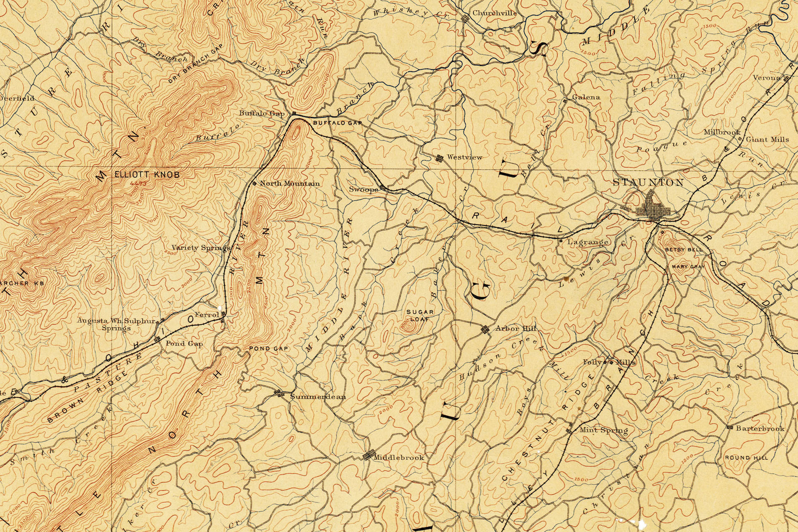

-
Welcome to Sartography
-
We map software
-
And build intuitive applications
-

Based in Staunton, Virginia
We develop diagrams that encourage cooperation and shared understanding. We take a ground up, holistic approach to develop engaging models that communicate a unified vision of the future.
We create responsive simple APIs that fully respect the ideals of RESTful architecture. We can apply these techniques in Java, Scala, and Python.
We have a deep and abiding respect for System Administration and the complexity of highly distributed systems. We can communicate this respect effectively, engaging whole organizations in the discussion.
We can help you solve your own problems. When catastrophes loom and negotiations stall, we can provide you with the tools you need to reengage your team. Sometimes its just a lost, minor detail, that once uncovered allows a way forward.
We actively contribute to open source projects. We can help any business take advantage of the same open source projects in use at Google, Amazon, Facebook, Twitter and a host of other game changing companies.
We enjoy helping small businesses take advantage of big data. From Google Analytics to Apache Solr, there is tremendous technology we can bring to bear on solving issues and making local business a global power.
I am a successful, battle proven, software engineer with a gift for conveying complex technical information.
Copyrights © 2013 & All Rights Reserved by Sartography LLC.